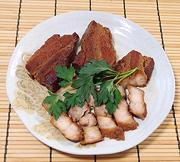

|
Pork Belly ChashuJapan | ||||
| Makes: Effort: Sched: DoAhead: |
1 # *** 2-1/2 hrs Yes |
This delicious preparation is most famous as a topping for Ramen Soups, but it can also be used as a topping for Rice, inclusion in Fried Rice, just as a Snack, or many other ways. | |||
|
2 ----- 1 1 1 1/4 1/3 3 2 ----- 1 |
# ---- c c c c c in pod ---- T |
Pork Belly (1) -- Seasoning Mirin (2) Sake Soy Sauce Sugar Water Ginger Root Star Anise (3) ------------ Oil |
Prep - (25 min)
|